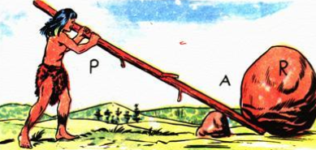
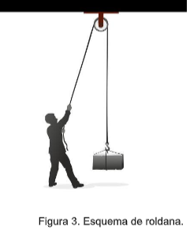
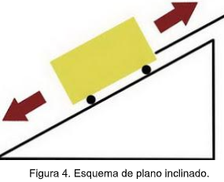
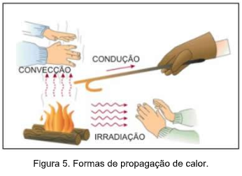
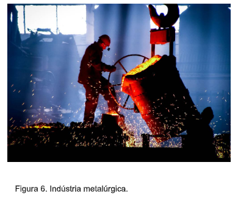

Capítulo 1
Máquinas Simples e Formas de Propagação do Calor na Indústria Metalúrgica
CONTEXTUALIZANDOEm nosso dia-a-dia, vivemos cercados de máquinas. É muito comum nos depararmos com máquinas de todos os tipos, desde as mais simples até as mais complexas. Usamos um abridor para abrir latas, cortamos papel com uma tesoura, penduramos quadros em pregos fixados na parede pelos martelos e conduzimos as crianças pequenas em carrinhos de bebê. São consideradas máquinas simples, porém nos auxiliam no dia a dia.
Máquinas simplesSabemos que as máquinas variam das mais simples às mais complexas. Máquinas complexas são aquelas que utilizam dispositivos eletrônicos em sua composição, como os circuitos integrados. Um exemplo de máquina complexa são os computadores.
 (RE)CONSTRUINDO CONHECIMENTOS
(RE)CONSTRUINDO CONHECIMENTOS
Caro aluno, Ao longo deste capítulo, explorando temas relacionados à Indústria Metalúrgica, buscaremos entender o que são máquinas simples e as principais formas de propagação de calor.
Uma máquina é considerada simples quando é constituída de uma só peça. Em toda máquina simples estão associados três elementos: FORÇA POTENTE ou POTÊNCIA (P) -Toda força capaz de produzir ou de acelerar o movimento. Produz trabalho motor. FORÇA RESISTENTE ou RESISTÊNCIA (R) - É toda força capaz de se opor ao movimento. Produz trabalho resistente. Um elemento de ligação entre potência e resistência, que pode ser um ponto fixo um eixo ou um plano.
E deste terceiro elemento que surge então os três tipos principais de máquinas simples:
ALAVANCA
ROLDANA
PLANO INCLINADO
- ALAVANCAS1) INTERFIXA:
Com o fulcro entre a potência e a resistência.
2) INTER-RESISTENTE
Com a resistência entre o ponto de aplicação da potência e o fulcro.
3) INTERPOTENTE
Com o ponto de aplicação da Potência entre o ponto de aplicação da resistência e o fulcro CONDIÇÕES DE EQUILÍBRIO DAS ALAVANCAS Em uma alavanca em equilíbrio, o produto da força potente pelo seu braço deve ser igual ao produto da força resistente pelo seu braço.
Fonte: https://www.fisica.net/mecanicaclassica/maquinas_simples_alavancas.php- ROLDANAS
As roldanas, também chamadas de polias, são tipos de rodas utilizados em máquinas para direcionar a força feita sobre determinados objetos por meio de fios, cordas ou cabos, de modo que seja possível desviar a trajetória ou até mesmo levantá-los. Elas são utilizadas na construção civil, na composição de motores, aparelhos de academia etc.
- PLANO INCLINADO
O plano inclinado é um tipo de superfície plana, elevada e inclinada, por exemplo, uma rampa. 5 Na Física, estudamos o movimento dos objetos bem como a aceleração e as forças atuantes que ocorrem num plano inclinado.
Existem três formas de propagação de calor conhecidas, são elas: CONDUÇÃO, CONVECÇÃO E IRRADIAÇÃO!
Tipo de propagação do calor que consiste na transferência de energia térmica entre as partículas que compõe o sistema. Nas substâncias condutoras esse processo de transferência acontece mais rápido como, por exemplo, nos metais. Já nas substâncias isolantes, como na borracha e na lã, esse processo é muito lento.
É o tipo de propagação do calor que ocorre nos fluidos em geral em decorrência da diferença de densidade entre as partes que formam o sistema. Dessa maneira, formam-se as correntes de convecção: o ar quente dos alimentos sobe para ser resfriado e o ar frio desce refrigerando os alimentos, mantendo-os sempre bem conservados. Essa também é a explicação do porquê o ar condicionado ser colocado na parte de cima de um ambiente.
A irradiação (ou radiação) térmica é uma das formas de propagação do calor que ocorre por meio de ondas eletromagnéticas, chamadas de ondas de calor. Além dela, o calor pode ser transmitido por condução térmica (agitação das moléculas) ou convecção térmica (correntes de convecção). É dessa forma que o Sol aquece a Terra todos os dias, como também é o meio que a garrafa térmica mantém, por longo tempo, o café quentinho em seu interior.
Fonte: https://meuartigo.brasilescola.uol.com.br/fisica/conducao-conveccao-irradiacao.htmConforto térmico: proteção para altas temperaturas no trabalho
Há muitos segmentos industriais que possuem processos que demandam altíssimas temperaturas para serem realizados, tais como: siderurgia, metalurgia, soldagem e ramo alimentício. Grande parte dos trabalhadores que atuam nessas áreas está alocada em ambientes onde há uma alta emissão de radiações infravermelho e ultravioleta, ou seja, forte propagação da onda de calor elevando drasticamente a temperatura local. Esse problema se agrava em lugares nos quais o sistema de refrigeração é mal calculado, aprisionando ainda mais o calor e dificultando o arrefecimento. Esses ambientes são considerados críticos, já que a exposição humana a uma alta taxa de calor (agravada pela falta de equipamentos de proteção individual — EPI ) é bastante prejudicial, podendo acarretar em desidratação, graves queimaduras, infertilidade masculina, problemas de visão e câncer de pele.
Fonte: http://blog.volkdobrasil.com.br/conforto-termico-protecao-para-altas-temperaturas-no-trabalho/Resolva as questões a seguir e verifique suas respostas no final do capítulo.
1) Explique o que são máquinas simples
2) Como definimos as diferentes formas de propagação de calor?
3) Relacione as máquinas simples abaixo com seu respectivo nome:
a)
b)
c)
1) Uma máquina é considerada simples quando é constituída de uma só peça.
2) Definimos por condução térmica que é um tipo de propagação do calor que consiste na transferência de energia térmica entre as partículas que compõe o sistema. A convecção térmica é o tipo de propagação do calor que ocorre nos fluidos em geral em decorrência da diferença de densidade entre as partes que formam o sistema. A irradiação (ou radiação) térmica é uma das formas de propagação do calor que ocorre por meio de ondas eletromagnéticas, chamadas de ondas de calor.
3) a) alavanca b) plano inclinado c) roldana